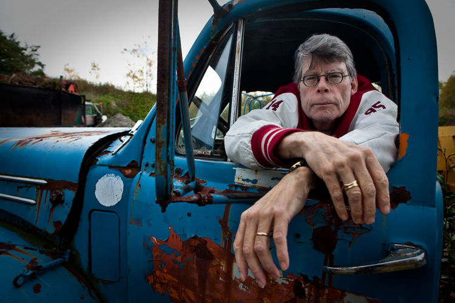
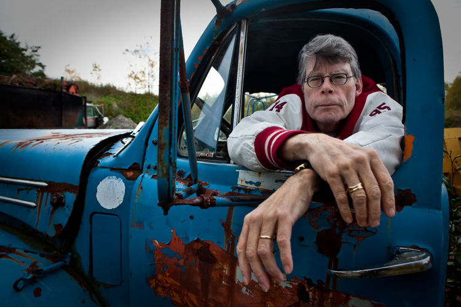
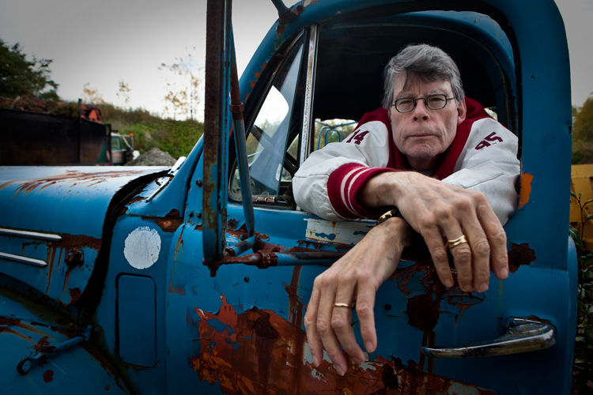
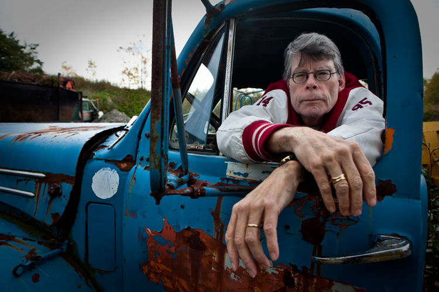

Stephen King nasce a Portland, nel Maine, nel 1947.
Abbandonati dal padre, Stephen ed il fratello David trascorrono l'infanzia tra il Massachusetts ed il Maine, allevati dalla madre e dalla zia materna.
Dopo il diploma (1966) S.K. si iscrive alla facoltà di letteratura dell'Università del Maine ad Orono e mentre lavora nella libreria del campus conosce una compagna di studi, Tabitha Spruce, e se ne innamora.
Si sposano nel 1971, un anno dopo la laurea. I primi tempi sono piuttosto duri, non riuscendo a trovare posto come insegnanti, i coniugi King devono accontentarsi di lavorare come operai in una lavanderia industriale.
A volte, la vendita di un racconto, porta un momentaneo sollievo economico, più spesso, però, gli scritti di Stephen King vengono cortesemente rifiutati dagli editori.
In assoluto, il suo primo racconto pubblicato fu "I Was a Teenage Grave Robber" (Ero un giovane profanatore di tombe) su Comics Review del 1967.
Nonostante i molti rifiuti, S.K. non si lascia demoralizzare ed a partire dalla metà degli anni '70, il numero di racconti pubblicati inizia a crescere esponenzialmente.
Nel frattempo King trova lavoro come insegnante alla Hamden Public High School nel Maine e dedica soltanto i week-end alla scrittura, riuscendo comunque a realizzare un numero sorprendente di racconti e romanzi, questi ultimi tutti rifiutati fino alla primavera del 1973 quando il manoscritto di Carrie viene finalmente accettato per la pubblicazione. Quello stesso manoscritto che l'autore, in un momento di sconforto, aveva gettato in un cestino e che la moglie aveva (saggiamente) ripescato prima che venisse portato via dai netturbini. La pubblicazione di Carrie porta notevoli benefici finanziari e permette a King di lasciare l'insegnamento per dedicarsi solamente alla scrittura.
Il 19 Giugno 1999 Bryan Smith, tossicodipendente con alcune condanne a carico per guida pericolosa, si trova alla guida di un camioncino Dodge in compagnia del suo rotweiler. Stanno percorrendo la route 5, vicino a Bangor, quando il cane nel tentativo di afferrare un hamburger, si infila tra le gambe di Bryan che sbanda ed investe violentemente un passante. L'uomo investito sfonda il parabrezza con la testa e rotola sul ciglio della strada.
E' Stephen King, uscito di casa per una passeggiata.
Lo scrittore, ricoverato in gravissime condizioni nel locale ospedale, se la caverà (si fa per dire), con una frattura all'anca destra, nove fratture in quella sinistra ed otto lesioni alla colonna vertebrale.
Gli ci vorranno quasi tre anni per riprendersi dall'incidente, che lascerà comunque un segno profondo nell'immaginario dello scrittore, riapparendo, sublimato in diversi romanzi e racconti (L'Acchiappasogni, Buick 8, Riding the Bull).
Attualmente S.K., vive e lavora nel Maine, con la moglie (ora anche lei scrittrice) e tre figli.
Ha scritto 35 romanzi e raccolte di racconti, ha venduto 120 milioni di copie, dalle sue opere sono stati tratti 25 film.
E' lo scrittore più pagato al mondo, pare che il suo fatturato annuo batta intorno ai 150 milioni di dollari.